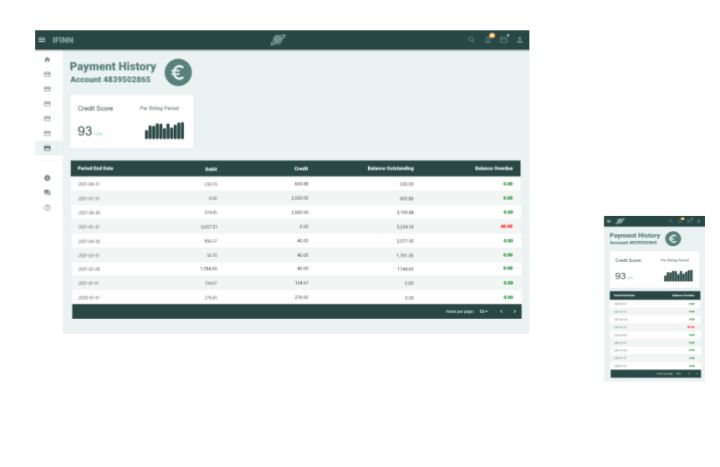

ifinn
International financial normalization, aggregation, and analysis.

We enable lending businesses to work with new immigrants immediately by incorporating foreign credit history -- calculated in near real-time -- into the risk assessment process.
With consumer consent, the ifinn platform can provide recent immigrants with a credit score calculated based on their credit history from abroad. Lending businesses in can access this data and incorporate in their loan decision-making process.
Our long-term goal is to present a unified financial history to both lenders and consumers, regardless of borders.
Lenders will of course have both UI and API (GraphQL) access to the platform.
We'd be violating the spirit of PSD2 if we only provided transparency to lenders, since point of PSD2 is to provide both consumers and lenders equal footing with respect to financial analysis decisions.
The ifinn platform provides a toolset to individual consumers so that they can have greater transparency into their own financial data, including credit rating. The app allows a consumer to obtain their account data from various financial institutions, bring it all into the same "workspace", and obtain summary insights.

Work-in-progress screens Aug 2021. Built with React, Material-UI (and little Photoshop).
The first step, of course, is to obtain financial data. We attach to Account Information Service Providers (ASIPs) to obtain financial data from various regions. With a consumer's consent, we can access data from banks in their place of origin. We bring that data into a virtual workspace where input from all regions is treated equally.
Data schemas are disparate, even among Open Banking providers. Normalization is the process of transforming all data into a "level playing field" in order to apply commensurate analytics. This is a long-standing integration problem with which we have much experience.
We apply algorithms to the data in order to bring key criteria related to a person's credit-worthiness to the forefront. We start with Payment History analysis, as payment behavior is the key ingredient in most analyses of credit-worthiness.
We summarize the outcomes of our analytics in order to present them for easy consumption by both consumers and lenders.
We expect that our output is one ingredient among several informing an overall analysis. Our results augment overall analysis. We do not expect our results to be solely responsible for the outcome of any lending decision. Rather, our data improves the overall outcome, for both lender and consumer.
Reach out to us at contact@civismundi.io